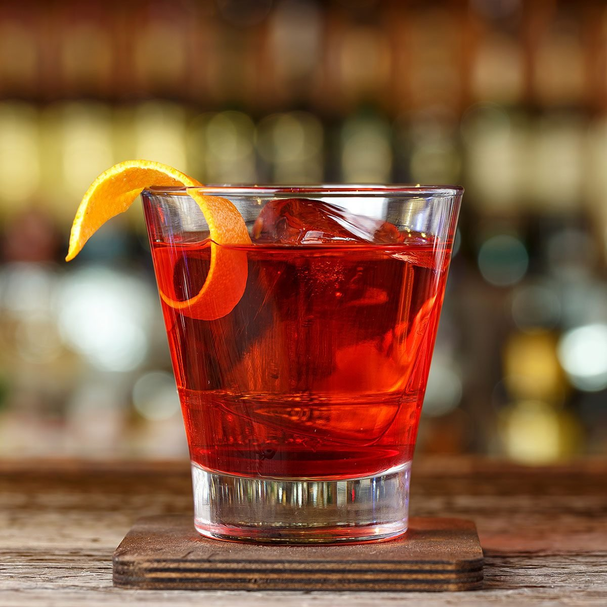

Classic Negroni

Description
To make the perfect classic negroni cocktail all you need is balance:
use equal parts gin, vermouth and Campari, and choose the best products
you have in reach
Ingredients
- 25ml gin
- 25ml sweet vermouth
- 25ml Campari
- ice
Steps
- Pour the gin, vermouth and Campari into a mixing glass or jug with ice. Stir well until the outside of the glass feels cold
- Strain into a tumbler and add 1 large ice sphere or some fresh ice, and garnish with an orange slice, using a blood orange when in season
Home